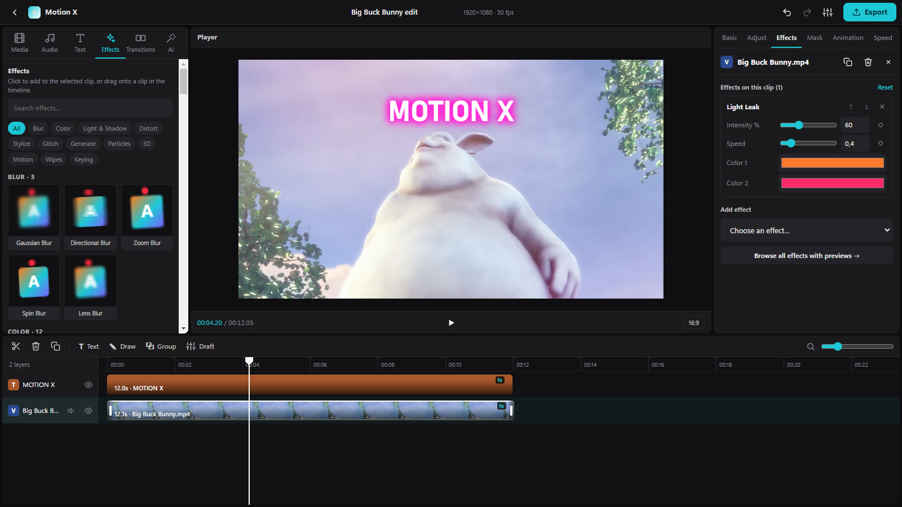
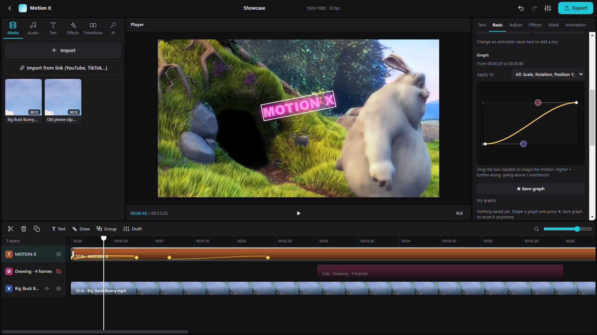
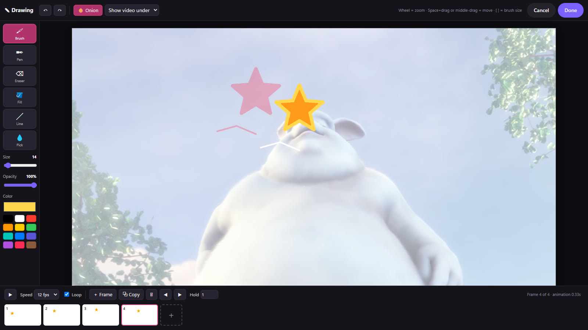
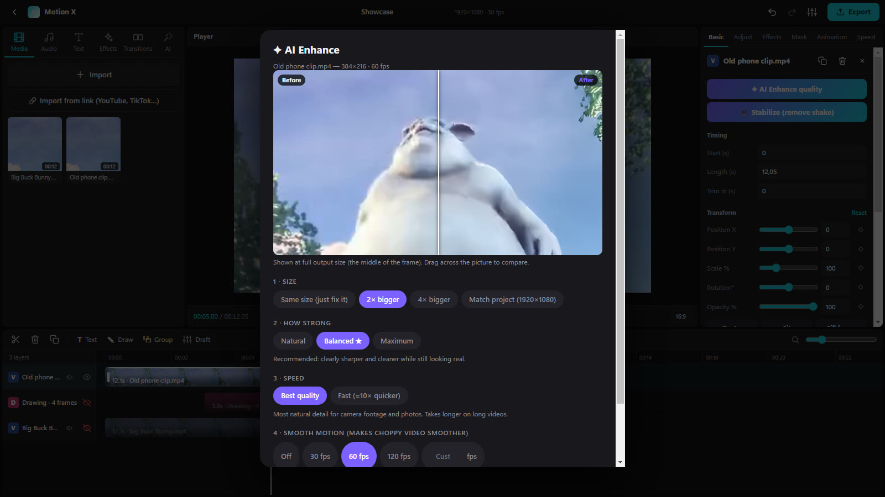

The video editor for people who animate.
Motion X puts a layer timeline, keyframes you shape with graphs, 92 GPU effects and a frame-by-frame drawing tool in one Windows app. It's free and needs no account.
Windows 10 / 11, 64-bit · 244 MB · v1.0.1

Try the effects
This runs Motion X's own effect shaders in your browser. Pick an effect, drag its settings. In the app, every one of these settings can be keyframed.
Settings
Demo footage: Big Buck Bunny © Blender Foundation, CC BY 3.0.
A look inside
Screenshots from the app, nothing mocked up.

Shape every move with a graph
Set keyframes on any property, then drag the curve between two of them to control how it eases. Pull the curve past the top for overshoot.
- Position, scale, rotation, opacity, colour and every effect setting
- Ready-made graphs, and your own saved for reuse

Draw on your video, frame by frame
Open a drawing layer and sketch straight over your footage. The frame before shows faintly in red, the next in blue.
- Brush with pen pressure, pen, eraser, fill, line, colour picker
- Hold frames, set 4 to 30 fps, loop or play once

Fix old, blurry clips
A neural upscaler on your graphics card rebuilds detail in low-resolution or blocky video. Drag across the preview to compare before and after. Nothing is uploaded anywhere.
- Up to 4× the size
- New in-between frames for smooth motion, up to 240 fps
- Stabilize removes handheld shake
What else is in it
Layer timeline
Video, pictures, text, drawings and audio on their own tracks. Trim, split, reorder, snap.
Colour adjust
Exposure, contrast, highlights, shadows, temperature, HSL and one-click looks.
Masks and groups
Shape masks with feathering. Group clips and let one subtract or intersect the others.
Transitions and speed
Fades, slides, zooms and crossfades. Slow motion, fast forward and reverse.
Import from a link
Paste a YouTube or TikTok link and choose the quality.
Export
Any aspect ratio, frame rate and resolution up to 8K. The file matches what you saw in the player.
Download
Free for Windows. No installer, no account.
v1.0.1 · 244 MB · Release notes
0BE4D2AEE71E9D5404ABBEFEBD8F43818E1B9BBEAC8DEBB9AF27ACF57FE0BF05
- Download the zip.
- Right-click it and choose Extract All.
- Open the Motion X folder and run Motion X.exe.
- Optional: right-click Motion X.exe, Send to → Desktop for a shortcut.
Questions
Windows says "Windows protected your PC". Is it safe?
Windows shows this for new apps that aren't widely downloaded yet and aren't code-signed. Click More info, then Run anyway. To check your download wasn't changed on the way, compare its SHA-256 with the one above (in PowerShell: Get-FileHash MotionX-Windows.zip).
Where are my projects saved?
In %APPDATA%\Motion X\Projects. You can move or replace the app folder without losing them.
Is it free?
Yes. No account, no watermark, no subscription.
Does it send my videos anywhere?
No. Editing, effects, export and the AI tools all run on your computer. Motion X only goes online when you import a video from a link.
Why does AI Enhance need a graphics card?
The upscaler runs on the GPU through Vulkan, which almost every NVIDIA, AMD and Intel graphics card from recent years supports. Without one, Enhance falls back to a simpler clean-up and resize.
Which links can I import?
YouTube, TikTok, Instagram, X, Vimeo and many more. Only import videos you made or have permission to use.
How do I update or uninstall it?
To update, download the new zip and replace the old Motion X folder. Your projects stay put. To uninstall, delete the folder, and %APPDATA%\Motion X too if you want your projects gone.
I found a bug or have an idea. Where do I send it?
Open an issue on GitHub. Include your Windows version and what you were doing.
No questions match.